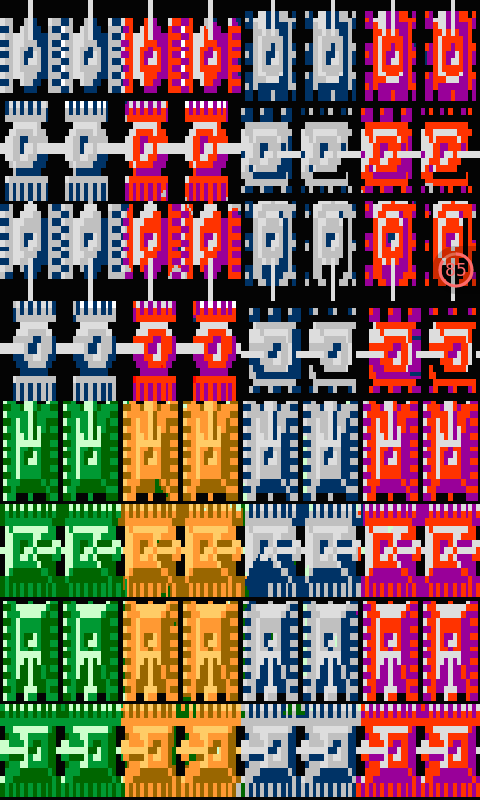
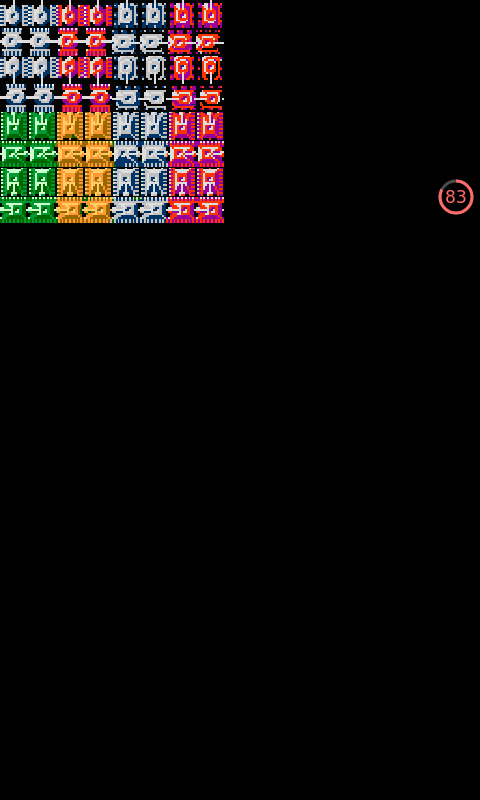
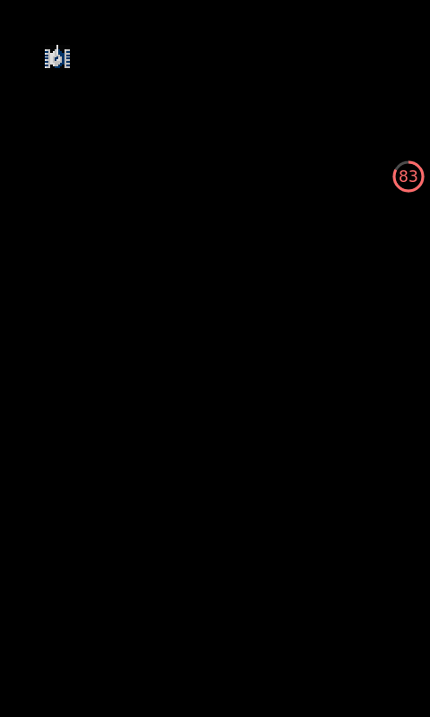
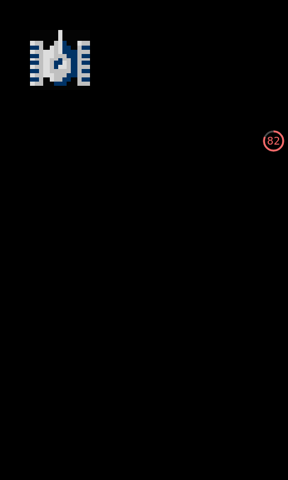

粘贴表面
上一节，我留下了一个函数没有说，那就是
BlitScaled它输入四个参数，第一个参数是要粘贴(Blit)的源表面，第二个是要粘贴的源表面的区域，如果是填NULL就是全部粘贴，第三个参数是那个被粘贴的目标表面，第四个是被粘贴的区域，如果为NULL则是粘贴到整个目标表面，也就是说这个可以对源表面进行控制，控制源表面粘贴区域的大小，可以通过这个实现缩放效果，它有个兄弟函数BlitSurface不支持这个功能把它禁掉了，多说无益，我们来看看代码(由于之前的代码没有啥变化我们就弄出来了，直接看多出来的部分)
带缩放功能的Blit函数
//粘贴表面 SDL_BlitScaled(Surface, NULL, WindowScreen, NULL);运行程序:

不带缩放功能的Blit函数
//粘贴表面 SDL_BlitSurface(Surface, NULL, WindowScreen, NULL);运行程序:

从运行效果可以看出，第一个的图片拉伸现象明显，第二个则是中规中矩的大小，接下来我们看看图形的剪切效果
//切割和粘贴用的矩形参数 SDL_Rect Cut, Box; //切割表面的区域 Cut.x = 0; Cut.y = 0; Cut.w = 28; Cut.h = 28; //粘贴表面的盒子 Box.x = 50; Box.y = 50; Box.w = 100; Box.h = 100; //粘贴表面 SDL_BlitSurface(Surface, &Cut, WindowScreen, &Box);
运行程序:

可以看到一辆小坦克静静的停在那里(太小了)，没有被缩放，下面看看能缩放的:
//切割和粘贴用的矩形参数 SDL_Rect Cut, Box; //切割表面的区域 Cut.x = 0; Cut.y = 0; Cut.w = 28; Cut.h = 28; //粘贴表面的盒子 Box.x = 50; Box.y = 50; Box.w = 100; Box.h = 100; //粘贴表面 SDL_BlitScaled(Surface, &Cut, WindowScreen, &Box);
运行程序:

可以看到，那些矩形参数没有改变，但是这辆坦克可是被缩放了的，宽度和高度从28变成了100，也好观察些了，不是么，嘿嘿。
去背景
，蒽，这是我们本节的图片文件

//去背景 Uint32 color_key = SDL_MapRGB(Surface->format, 4, 4, 4); SDL_SetColorKey(Surface, SDL_TRUE, color_key); //粘贴去背景的表面 SDL_BlitScaled(Surface, &Cut, WindowScreen, &Box2);
运行程序
可以看到，黑色的背景被去掉了(右图)，那么我来解说一下
Uint32 color_key = SDL_MapRGB(Surface->format, 4, 4, 4);
这里我定义了一个32位的颜色color_key用函数SDL_MapRGB按照Surface的格式创建了一个类似黑色的 SDL_SetColorKey(Surface, SDL_TRUE, color_key);
函数是这样用的: SDL_SetColorKey(